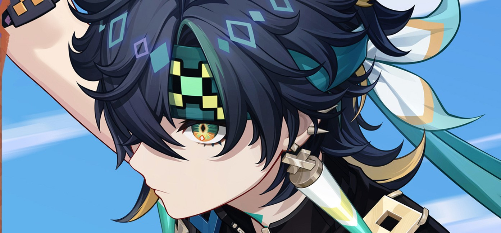

Kepribadian

Bagi publik umum, Saurian Hunter tampak pragmatis, dingin, dan langsung pada intinya. ia memiliki
pendekatan hidup yang utilitarian, dan sikap dinginnya cenderung membuat orang-orang di sekitarnya enggan
mendekat. Meskipun terlihat memahami lebih banyak daripada yang ia tunjukkan, Kinich lebih suka menjaga jarak dari orang
lain dan membiarkan semua orang berbicara. Kinich sering terlihat mengamati percakapan dari kejauhan.
Sebagai anggota inti dari Scions of the Canopy, Kinich menyukai olahraga ekstrem, dan menurut rekannya K'uhul Ajaw,
ia pernah terjun bebas dari tebing dan hidup untuk menceritakannya. Terampil dalam kemampuannya sebagai Pemburu Saurian
Huitztlan, Kinich menilai komisi dan menetapkan harga dengan percaya diri tanpa sedikit pun kesopanan ksatria,
yang sering kali membuat orang lain memandang remeh anak laki-laki itu. Namun, Kinich tampaknya tidak terpengaruh
oleh pendapat orang-orang di sekitarnya. Selama harganya tepat, ia akan memenuhi semua komisi dengan cara yang memuaskan.
Meskipun sifatnya pendiam, Kinich tidak memiliki masalah dalam melakukan negosiasi atau berbicara balik kepada orang lain
ketika situasi mengharuskannya. Dalam kejadian umum di mana Ajaw bertengkar dengannya, Kinich terlihat mahir
menghentikannya tanpa terjebak dalam kemarahan atau kekerasan. Meskipun sikapnya yang tak tergoyahkan dan realistis, dia jelas menunjukkan niat baik dan sangat peduli pada mereka yang berhasil dekat dengannya.
Penampilan

Kinich menggunakan model pria sedang. Dia memiliki kulit cokelat terang, mata kuning kehijauan,
dan rambut hitam kebiruan yang berantakan dengan garis hijau. Kedua lengannya ditato dengan tinta hijau,
dan dia memakai sarung tangan hitam yang dihiasi. Sebuah syal hijau yang dihiasi dengan dua bulu putih dengan
ujung kuning dan hijau terselip di belakang diikat di kepalanya, dan sebuah jumper hijau diikat di pinggangnya.
Dia memakai anting putih, hijau limau, dan hijau yang menjuntai di setiap telinga, serta celana longgar hijau
dengan aksen biru dan oranye. Vision Dendro miliknya terletak di kaki kanannya, dan dia memakai sepatu bot hitam
dengan aksen hijau, biru, dan emas.
Kisah
Natlan adalah sebuah bangsa di mana manusia dan Saurian hidup berdampingan, meskipun tidak semua Saurian
mendekati manusia dengan niat baik, dan serangan Saurian masih menyebabkan kematian. Inilah sebabnya mengapa
Pemburu Saurian, seperti Kinich, ada—ahli dalam kelemahan Saurian setelah bertahun-tahun hidup di alam liar,
tanpa dilatih oleh guru besar. Kinich dikenal sebagai pemburu alami, efisien dan tajam, tetapi tidak terbatas
pada profesinya sebagai Pemburu Saurian, karena desas-desus menyebut dia juga terampil dalam pekerjaan kotor
jika dibayar dengan harga yang tepat. Pendekatan utilitariannya membuat banyak orang menjaga jarak, namun
keyakinannya bahwa segala sesuatu memiliki harga tidak tergoyahkan. Bahkan jika ia menerima komisi dari orang
yang kesulitan atau anak-anak, dia tetap meminta imbalan sesuai dengan yang dia anggap layak, tanpa niat untuk
menjelaskan prinsip-prinsipnya kecuali ada yang bersedia membayar untuk itu.
Kisah Karakter 1
Sebelum berusia tujuh tahun, Kinich tinggal bersama keluarganya. Ayahnya adalah seorang kurir yang sering berjudi
dengan upahnya, kadang membawa permen mahal saat menang, tetapi mabuk dan berhutang saat kalah. Ibunya yang ulet
sering berdebat dengannya, terutama ketika ayahnya kalah, namun meskipun sering bertengkar, ibunya selalu mengurus
kebun di belakang rumah. Kehidupan semakin sulit ketika ayah Kinich kehilangan rumah mereka dan mereka terpaksa
pindah ke kaki gunung, jauh dari suku mereka. Di tempat ini, Kinich belajar bertani, membuat tali dari tanaman jarak,
berburu babi hutan, dan menghadapi kekerasan dari ayahnya, yang semakin parah seiring kondisi mabuknya.
Suatu malam, ibu Kinich pergi meninggalkan mereka tanpa sepatah kata pun, meninggalkan Kinich untuk mengurus pekerjaan
rumah dan ladang sendirian. Saat Kinich semakin tumbuh, ia menemukan cara untuk melarikan diri dari ayahnya dengan
kemampuannya berlari cepat. Pada ulang tahun ketujuhnya, saat ia bertanya tentang ibunya, ayahnya mengejarnya dengan
marah, namun jatuh dari tebing dan meninggal. Kinich, yang awalnya bingung, menahan air matanya dan membawa pulang
tubuh ayahnya dengan menggunakan kait pendaki yang pernah dia pelajari diam-diam. Pada hari ulang tahunnya yang ketujuh,
gunung memberikan kebebasan kepada Kinich, tetapi yang dia temukan hanyalah kesendirian.
Kisah Karakter 2
Setelah kepergian kedua orang tuanya, Kinich terus hidup di bawah kaki gunung, bertani, menenun, berburu, dan pergi
ke pasar suku untuk menukar hasil buruannya dengan kebutuhan lain. Seiring waktu, anak yang pendiam ini mulai menarik
perhatian orang-orang dewasa di majelis suku. Beberapa mencoba menawarkan bantuan, tetapi selalu ditolak oleh Kinich,
karena baginya, tidak ada yang gratis di dunia ini. Bantuan gratis tampak mencurigakan, seperti umpan dalam jebakan
buruannya. Karena itu, Kinich selalu menjaga jarak dari orang lain dan hanya datang ke suku untuk berdagang, lalu segera pergi.
Kepala suku bernama Leik, yang bertanggung jawab atas pendidikan anak-anak, menyadari situasi keluarga Kinich.
Dia mengusulkan transaksi khusus agar Kinich mau menghadiri sekolah suku, menawarkan tugas kurir sebagai pengganti
biaya sekolah. Namun, Kinich menolak, karena dia merasa lebih baik berburu daripada melakukan tugas tersebut.
Leik tidak menyerah dan menghabiskan sebulan menjelaskan pentingnya pendidikan, akhirnya mereka mencapai kesepakatan.
Kinich akan pergi ke sekolah setiap kali dia ke pasar, sebagai ganti tugas sebagai kurir Leik. Tanpa diduga,
Kinich hanya membutuhkan satu hari untuk lulus dari sekolah tersebut.
Kisah Karakter 3
Elder Leik sedang mengajar ketika Kinich datang ke sekolah sesuai kesepakatan mereka. Anak-anak yang duduk melingkar
memperhatikan Kinich, yang duduk di tepi luar lingkaran dengan pakaian yang lusuh, tanpa alas kaki, dan mengenakan
pakaian kasar yang membuatnya tampak seperti anak liar. Saat seorang anak laki-laki mengejeknya sebagai "monyet
berlumpur dari hutan," Elder Leik segera mengalihkan perhatian mereka ke pelajaran hari itu tentang para pahlawan
dan pengorbanan mereka. Ketika Leik menjelaskan bahwa para pahlawan berkorban demi kebajikan yang datang dari surga
dan tidak bisa diukur dengan harga, Kinich mempertanyakan hal tersebut, ingin tahu apa yang sebenarnya didapat para
pahlawan sebagai imbalan. Bagi Kinich, tidak ada yang berharga jika tidak bisa ditukar dengan Mora, karena itu adalah
sesuatu yang nyata dan bisa memberinya kebutuhan hidup.
Setelah diejek oleh anak-anak lainnya, Kinich meninggalkan kelas dengan pikiran yang jernih. Baginya, pelajaran hari
itu tidak sepenuhnya sia-sia. Anak-anak di kelas hanya menyanjung para pahlawan tanpa memahami bagaimana mereka bisa
bertahan hidup. Mereka hanyalah "brats" yang akan pulang dan diberi makan oleh ibu mereka, sementara Kinich sudah tahu
cara bertahan hidup sendiri. Kini, dia tahu apa yang harus dilakukan: menjadi seorang pahlawan, bukan demi kebajikan,
tapi demi Mora, sesuatu yang nyata dan berguna.
Kisah Karakter 4
Seorang pahlawan harus kuat, dan hal ini tak terbantahkan. Tak lama setelah lulus dari Learning Lodge, Kinich mendatangi
Elder Leik untuk menanyakan bagaimana ia bisa memperoleh kekuatan tersebut. Ia bahkan membawa semua harta bendanya
sebagai imbalan, berharap itu bisa menjadi harga yang pantas: peralatan membuat perangkap, biji jarak, dua pot besar
tepung tapioka, sekantong biji Grainfruit, seekor babi hutan segar, dan sedikit Mora. Namun, Elder Leik menolak tawaran
itu, dengan syarat Kinich harus belajar apa artinya menjadi seorang pahlawan sejati dalam perjalanannya.
Elder Leik, yang melihat potensi besar dalam diri Kinich, setuju untuk melatihnya. Kinich kemudian tinggal bersama sang
Elder di pegunungan selama bertahun-tahun, belajar tentang sejarah Natlan, pahlawan-pahlawannya, dan juga berbagai
keterampilan dari para ahli yang diperkenalkan Leik. Dari pembuat panah hingga dukun spesialis racun Saurian,
Kinich mempelajari berbagai ilmu tanpa menolak. Namun, di waktu istirahatnya, ia kembali ke gunung untuk melatih
keterampilan bertarungnya, meniru gerakan hewan liar. Seiring waktu, dia mulai menerima berbagai tugas berbahaya,
termasuk membunuh Saurian kuat, dan tanpa bimbingan Elder, ia dengan cekatan menilai setiap tugas dan menentukan
harga yang sesuai. Meski dikritik oleh beberapa orang di suku, termasuk Elder Trinidad, yang meragukan kesetiaannya
pada nilai-nilai suku, Elder Leik membela Kinich. Baginya, Kinich bukanlah seorang pahlawan tradisional dari Scions of
the Canopy, melainkan pahlawan dari pegunungan — jenis pahlawan yang ia pilih untuk menjadi.
Kisah Karakter 5
Mungkin terlihat aneh bahwa Kinich, seorang penyendiri, selalu ditemani oleh sosok yang mengklaim dirinya sebagai
"K'uhul Ajaw" — atau "Divine Lord" — di sisinya. Berdasarkan penelitian dari Asosiasi Relik Saurian, Ajaw adalah
peninggalan asli dari era naga yang berasal dari ribuan tahun lalu. Wujud sejatinya disegel dalam gelang misterius,
sementara yang terlihat sekarang hanyalah proyeksi melalui phlogiston. Meskipun para peneliti dari asosiasi itu
menganggap Ajaw memiliki nilai penelitian yang besar dan menawarkan harga tinggi untuk memilikinya, Kinich menolak
tanpa ragu. Dia menyadari bahwa Ajaw sangat cerdas, licik, dan berbahaya. Alasan langsung Kinich menolak tawaran
tersebut adalah karena mereka telah menandatangani sebuah perjanjian yang tidak dapat diputuskan.
Dalam sebuah reruntuhan naga kuno yang penuh dengan monster dan jebakan, Kinich adalah satu-satunya yang berhasil
mencapai kedalaman tempat Ajaw disegel. Setelah beberapa hari saling menguji dan mengukur, mereka mencapai kesepakatan.
Ajaw akan mematuhi perintah Kinich dan memberikan sebagian kekuatannya secara terbatas. Sebagai gantinya, setelah Kinich
meninggal, tubuhnya akan menjadi milik Ajaw.
Vision
Setelah mendapatkan Ancient Name-nya, Kinich tidak pernah berjanji untuk mengikuti contoh pahlawan sejarah yang
mengorbankan diri mereka untuk orang banyak. Ia ikut serta dalam Perang Penjaga Malam tanpa ragu, menghadapi kematian
yang mulia dengan berani. Dalam pertempuran yang berbahaya, kekuatan Abyss mengambil bentuk orang-orang tercintanya,
yang membuat para pejuang ragu sejenak, dan itu cukup untuk menghancurkan mereka. Ketika Kinich dihadapkan pada sosok
ibunya, ia tidak terpengaruh oleh nostalgia; sebaliknya, insting pemburunya mendorongnya untuk menyerang. Setelah
menyaksikan kematian teman-temannya, ia bertekad bahwa satu-satunya cara untuk membalas dendam adalah dengan meraih kemenangan.
Setelah terjatuh dan mengira bahwa ia telah kalah, tubuh Kinich tiba-tiba bangkit kembali, dilengkapi dengan permata
hijau yang memancarkan kehidupan. Dalam keadaan baru ini, ia melawan habis-habisan hingga mengalahkan semua musuh.
Ketika ia sadar kembali di Stadion Api Suci, teman-temannya juga bangkit, dan lagu Ode of Resurrection bergema.
Kinich menyadari bahwa ia telah menyimpang dari tujuan awalnya untuk menjadi pahlawan demi Mora; kini, ia berjuang
untuk teman-teman, tanah air, dan kebahagiaan orang-orang. Dalam hati, ia merasa lebih yakin untuk membayar harga apa
pun demi mencapai apa yang kini ia inginkan.